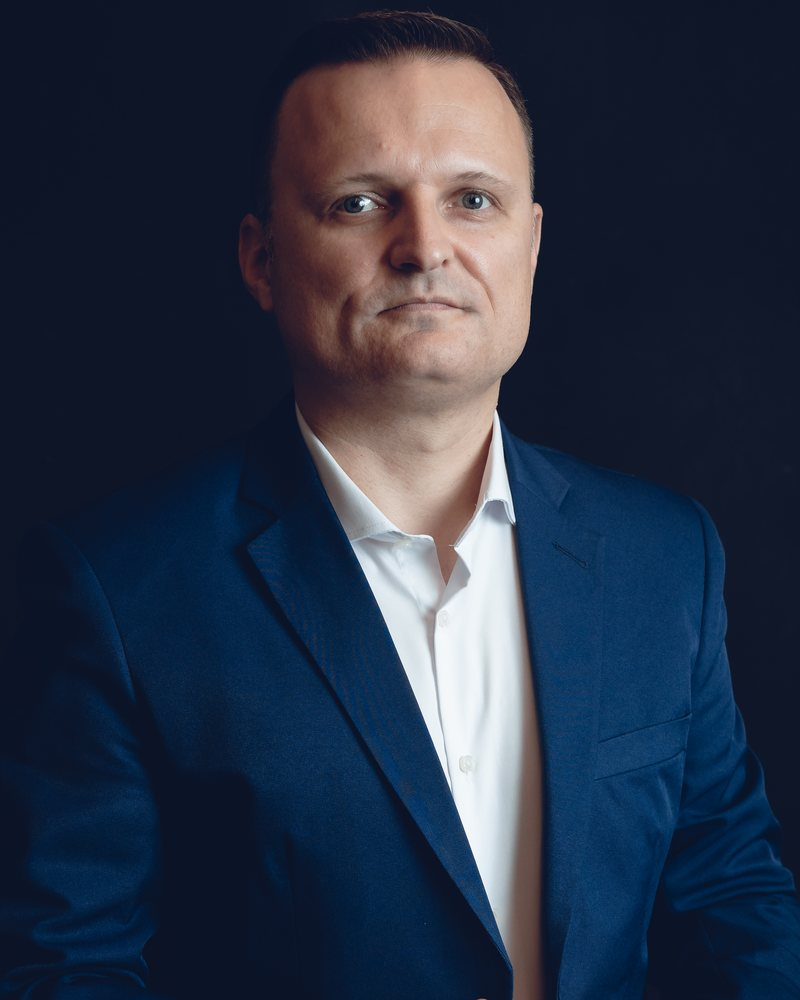
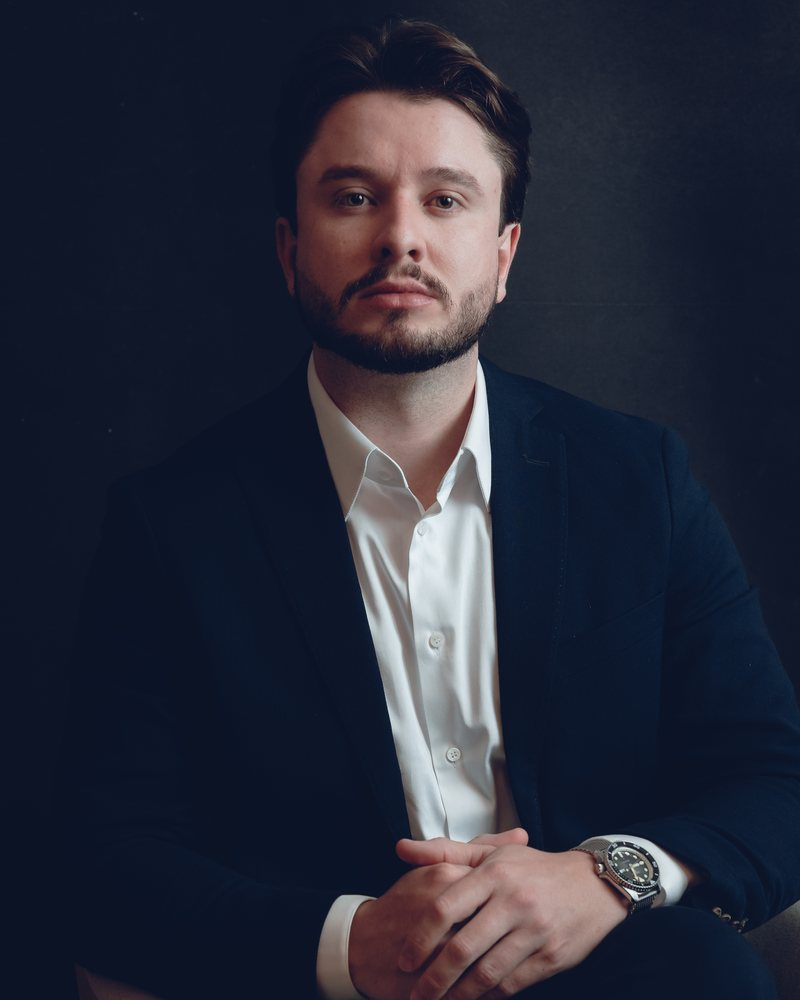

Quem somos
Opinião não reestrutura empresa. Isso exige experiência.
A Force Partners é uma boutique de reestruturação empresarial, recuperação judicial e turnaround, com sedes em Itajaí e Chapecó (SC) e atuação nacional. A Exame descreveu o trabalho como o dos "médicos" para empresas que estão respirando por aparelhos, no ranking Negócios em Expansão 2025.
Os sócios entram no mandato. Duas décadas reestruturando empresas, mais de R$ 1 bilhão em passivos e 100% dos planos aprovados, ao lado de bancos, fundos e administradores judiciais. Execução conduzida com responsabilidade por sócios.
Caciano Zanella
Sócio Fundador
Gestão e performance
27 anos de consultoria gerencial focada em maximização de resultados. Professor universitário. MBA em Gestão de Produção e Logística e Ciências Contábeis pela UNOESC.
Ver perfil no LinkedIn
Eduardo Rücker
Sócio
Operações e indústria
22 anos em multinacionais das indústrias frigorífica e metalmecânica, passando por produção, logística, PCP, manutenção e qualidade. Professor universitário. Mestre em Engenharia de Produção e Sistemas pela Unisinos.
Ver perfil no LinkedIn
Marlon Korbes
Sócio Fundador
Reestruturação e recuperação judicial
Especialista em reestruturação de empresas em crise e recuperação judicial. Formação em reestruturação e RJ pelo INSPER, finanças pela FIA, gestão de projetos pela FGV, MBA pelo IBMEC e Ciências Contábeis pela UNOESC.
Ver perfil no LinkedInO modelo não é consultoria de slide. A Force aloca executivos em tempo integral dentro da empresa, organiza gestão, custo, precificação e caixa, e implanta um BI que vira a fonte única de informação para a decisão. O trabalho começa pelo diagnóstico de causa-raiz e termina com a gestão profissionalizada para a empresa não voltar ao mesmo lugar.
A primeira conversa já é diagnóstica.
Empresa em decisão crítica ou capital exposto: fale direto com quem conduz o mandato.
Falar com um sócio